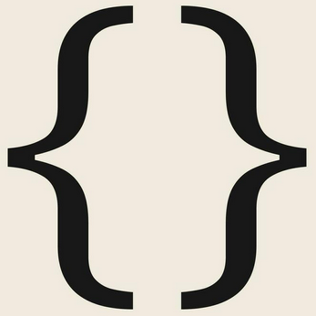
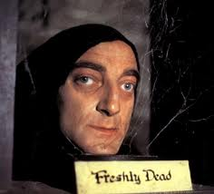

Nosotros:
El equipo encargado de realizar esta página web es "The Gitters" y está compuesto por un equipo multidisciplinar de desarrolladores web con amplia experiencia. Los coders que han trabajado en este proyecto son:

Belén: Product Owner del proyecto. Es la encargada de la relaciónc on el cliente. Transmitir sus necesidades al equipo y presentar los resultados para su validación.
Paco:Srcum Master. Es el responsble de que todo funcione correctamente, que el equipo trabaje de manera fluida y resolver aquellos problemas que puedan surgir durante el desarrollo.
Gaizka:además de programador realiza las labores de diseño visual de la página web
Igor:Progamador dentro del proyecto.
Youssef:Programador dentro del proyecto.